5 — Your frontend talks straight to the database
There is no backend. There's a browser, a database, and a permission layer someone forgot to write. Everything in the client is attacker-controlled — including the "validation."
The default architecture vibe coding tools reach for puts the trust
boundary in the client: browser talks to a Supabase or Firebase SDK,
which talks straight to the database. That's legitimate in
principle — it's a supported pattern, not a mistake by itself —
but only if the policy layer guarding it is airtight. And AI
generators are good at writing the query. They're bad at writing the
policy that's supposed to guard it. The platforms themselves warn
about this directly: Firebase's own security rules documentation
exists because "clients aren't responsible for enforcing security."
Vibe-coded apps put prices, roles, quantities, and
isAdmin flags in client-side JavaScript anyway, because
that's the fastest path to a working demo.

In the left version, one missing rule is the whole database. In the right, it's one endpoint.
Secrets ship in the bundle, and then they get scraped — this is literally how Moltbook was found in January 2026: researchers at Wiz simply read the production JavaScript and found a hardcoded Supabase URL and key, with Row Level Security never enabled. The exposure reached 1.5 million AI-agent API tokens and roughly 65,000 emails, with private agent messages exposed and any agent takeable over by anyone. The founder confirmed the app was vibe-coded. It's not an isolated case: a wave of Firebase misconfigurations found in January 2024 — starting with researchers who got full database privileges on an AI hiring bot just by registering — turned up around 900 misconfigured sites exposing 125 million-plus records, including over 20 million plaintext passwords. That predates "vibe coding" as a term; AI just reproduces the same old failure at greater speed and scale now.
Scale is exactly what turns a quiet misconfiguration into an incident. At twelve users, nobody's looking. At fifty thousand, opening devtools, finding the key in the Network tab, and querying the REST API directly is a five-minute exercise for anyone curious enough to try. One builder's public "guys, i'm under attack" thread in March 2025 — a Cursor-built SaaS with keys exposed client-side and a paywall enforced only in CSS — went from viral to shut down within five days.
Same attacker, same devtools. What they find in the bundle decides how far they get.
The fix isn't "add auth" — it's add a trust boundary. The
backend-for-frontend pattern: the browser holds only a short-lived
session token, and a server tier holds the privileged credential,
re-validating everything the client claims — price, quantity, role —
before acting on it. Escape.tech traced 83% of the exposures across
5,600 vibe-coded apps they scanned to exactly this: Supabase RLS
misconfiguration, with tables named payments,
orders, and transactions left open to
unauthenticated writes.
If you've shipped fast with AI tools and want a second pair of eyes before it goes further, that's exactly what a vibe code audit is for.